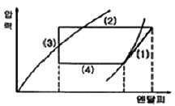
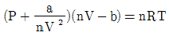
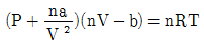
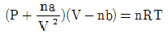
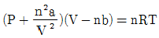
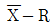

가스기능장 (2006-07-16 기출문제)
1과목: 임의 구분
1. 액화석유가스의 충전사업자는 수요자의 시설에 대하여 위해 예방 조치를 하고, 그 실시 기록을 작성하여 몇 년간 보존하여야 하는가?
- 1년
- 2년
- 3년
- 4년
(정답률: 80%)

2. 산화에틸렌의 저장탱크 및 충전용기에는 45℃에서 그 내부 가스의 압력이 얼마 이상이 되도록 질소가스 를 충전하는가?
- 0.2 MPa
- 0.4 MPa
- 1 MPa
- 2 MPa
(정답률: 75%)
3. 물체에 압력을 가하면 발생한 전기량은 압력에 비례하는 원리를 이용하여 압력을 측정하는 것으로서 응답이 빠르고 급격한 압력 변화를 측정하는데 유효한 압력계는?
- 다이아프램(Diaphram) 압력계
- 벨로즈(Bellows) 압력계
- 부르돈관(Bourdon Tube) 압력계
- 피에조(Piezo) 압력계
(정답률: 80%)
4. 의료용 가스용기의 도색 구분으로 옳은 것은?
- 산소 - 청색
- 액화탄산가스 - 회색
- 질소 - 갈색
- 에틸렌 - 흑색
(정답률: 63%)
5. 도시가스공급시설 중 정압기지 등의 기준으로 옳지 않은 것은?
- 정압기를 설치한 장소는 계기실, 전기실 등과 구분하고 누출된 가스가 계기실 등으로 유입되지 아니하도록 할 것
- 정압기지에는 시설의 조작을 안전하고 확실하게 하기 위하여 조명도가 100 룩스 이상이 되도록 할 것
- 정압기지 주위에는 높이 1.5m 이상의 경계책 등을 설치하여 외부인의 출입을 방지할 수 있는 조치를 할 것
- 지하에 설치하는 정압기실은 천정, 바닥 및 벽의 두께가 각각 30㎝ 이상의 방수조치를 한 콘크리트 구조일 것
(정답률: 81%)
6. 산화에틸렌의 공기 중 폭발범위(한계)를 가장 옳게 나타낸 것은?
- 하한: 3.0v%, 상한: 80v%
- 하한: 2.4v%, 상한: 10.3v%
- 하한: 4.1v%, 상한: 55v%
- 하한: 2.8v%, 상한: 37v%
(정답률: 80%)
7. 표준상태(0℃, 1기압)에서 부탄(C4H10) 가스의 비체 적은 몇 L/g 인가?
- 0.39
- 0.52
- 0.64
- 0.87
(정답률: 44%)
8. 산소 16㎏과 질소 56㎏인 혼합기체의 전압이 506.5KPa 이다. 이때 질소의 분압은 몇 KPa 인가?
- 202.6
- 303.9
- 4⑤.2
- 506.5
(정답률: 57%)
9. 산소 공급원을 차단하여 소화하는 방법은?
- 제거소화
- 질식효과
- 냉각소화
- 희석소화
(정답률: 78%)
10. 식품접객업소로서 영업장의 면적이 몇 m2 이상인 가스사용시설에 대하여 가스누출자동차단기를 설치하여야 하는가?
- 33
- 50
- 100
- 200
(정답률: 80%)
11. 가스 배관을 지하에 매설하는 경우의 기준으로 옳지 않은 것은?
- 배관은 그 외면으로부터 수평거리로 건축물(지하가 및 터널 포함)까지 2m 이상을 유지할 것
- 배관은 그 외면으로부터 지하의 다른 시설물과 0.3m 이상의 거리를 유지 할 것
- 배관은 지반의 동결에 따라 손상을 받지 않도록 적절한 깊이로 매설 할 것
- 배관의 입상부, 지반급면부 등 지지조건이 급변하는 장소에는 곡관의 삽입, 지반개량 등 필요한 조치를 할 것
(정답률: 75%)
12. 열역학 제 2 법칙에 대한 설명으로 옳은 것은?
- 일을 소비하지 않고 열은 저온체에서 고온체로 이동시키는 것은 불가능 하다.
- 열이 높은 쪽에서 낮은 쪽으로 이동하여 마침내 온도의 차가 없는 열평형을 이룬다.
- 온도가 일정한 조건에서 기체의 체적은 압력에 반비례한다.
- 절대온도 0 도에서는 엔트로피도 0 도이다.
(정답률: 81%)
13. 가스도매사업의 가스공급시설의 시설기준으로 옳지 않은 것은?
- 액화천연가스의 저장설비 및 처리설비는 그 외면으로부터 사업소 경계까지 30m 이상의 거리 유지
- 고압인 가스공급시설은 통로, 공지 등으로 구획된 안전 구역안에 설치하되, 그 면적은 2만 m2 미만일 것
- 2개 이상의 제조소가 인접하여 잇는 경우의 가스공급시설은 그 외면으로부터 그 제조소와 다른 제조소의 경계까지 20m 이상의 거리 유지
- 액화천연가스의 저장탱크는 그 외면으로부터 처리 능력이 20만m3 이상
(정답률: 41%)
14. 매설용 주철관에 모르타르 등으로 라이닝하는 이유로 가장 거리가 먼 것은?
- 부식을 방지하기 위하여
- 강도를 증가시키기 위하여
- 마찰저항을 적게 하기 위하여
- 수분의 접촉을 방지하기 위하여
(정답률: 65%)
15. 고압가스안전관리법상 당해 가스시설의 안전을 직접 관리하는 사람은?
- 안전관리 부총괄자
- 안전관리 책임자
- 안전관리원
- 특정설비 제조자
(정답률: 85%)
16. CO와 Cl2를 원료로 하여 포스겐을 제조할 때 주로 쓰이는 촉매는?
- 염화 제1구리
- 백금, 로듐
- 니켈, 바나듐
- 활성탄
(정답률: 81%)
17. 공기액화 분리장치의 밸브에서 열손실을 줄이는 방법으로 가장 거리가 먼 내용은?
- 단축밸브로 하여 열의 전도를 방지한다.
- 열전도율이 적은 재료를 밸브봉으로 사용한다.
- 밸브 본체의 열용량을 가급적 적게 한다.
- 누설이 적은 밸브를 사용한다.
(정답률: 64%)
18. 고압가스안전관리법에 적용을 받는 가스 종류 및 범위의 기준으로 옳지 않은 것은?
- 상용의 온도에서 압력이 0.1 MPa 이상이 되는 액화가스
- 상용의 온도에서 압력이 1 MPa 이상이 되는 압축 가스
- 15도에서 압력이 0 Pa을 초과하는 아세틸렌가스
- 35도에서 압력이 0 Pa을 초과하는 액화시안화수소
(정답률: 71%)
19. 고압가스안전관리법에서 정한 500ℓ 이상의 이음매 없는 용기의 재검사 주기는?
- 1년마다
- 2년마다
- 3년마다
- 5년마다
(정답률: 85%)
20. 염소의 제법에 대한 설명으로 옳지 않은 것은?
- 염산을 전기분해 한다.
- 표백분에 진한 염산을 가한다.
- 소금물을 전기분해 한다.
- 염화암모늄 용액에 소석회를 가한다.
(정답률: 77%)
2과목: 임의 구분
21. 고압가스 취급 장치로부터 미량의 가스가 누출되는 것을 검지하기 위하여 시험지를 사용한다. 검지가스에 대한 시험지 종류와 반응색이 옳게 짝지어진 것은?
- 아세틸렌 - 염화제1구리착염지 - 적색
- 포스겐 - 연당지 - 흑색
- 암모니아 - 전분지 - 적색
- 일산화탄소 - 초산벤지딘지 - 청색
(정답률: 89%)
22. 압력조정기에 대한 제품검사 항목이 아닌 것은?
- 구조검사
- 기밀검사
- 외관검사
- 치수검사
(정답률: 73%)
23. 다음 시설 또는 그 부대시설에서 고압가스 특정제조 허가의 대상이 아닌 것은?
- 석유정제업자의 석유정제시설로서 그 저장 능력이 100톤 이상인 것
- 석유화학공업자의 석유화학공업시설로서 그 저장능력이 100톤 이상인 것
- 철강공업자의 철강공업시설로서 그 처리능력이 1만 세제곱미터 이상인 것
- 비료생산업자의 비료제조사설로서 그 저장능력이 100톤 이상인 것
(정답률: 79%)
24. 아세틸렌 제조에서 반드시 필요한 장치가 아닌 것은?
- 건조기
- 압축기
- 가스청정기
- 정류기
(정답률: 57%)
25. 수소의 성질에 대한 설명 중 옳지 않은 것은?
- 상온에서 가장 가벼운 기체이다.
- 증기밀도가 약 0.09 g/L로서 아주 낮다.
- 고온에서 금속재료에 전혀 투과하지 못한다.
- 무색, 무미의 가연성 가스이다.
(정답률: 83%)
26. 주울 톰슨 계수는 이상기체의 경우 어떤 값을 가지는가?
- 0 이다.
- +값을 갖는다.
- -값을 갖는다.
- 1이 된다.
(정답률: 62%)
27. 냉매설비에 사용하는 재료에 대한 설명으로 옳지 않은 것은?
- 암모니아는 동 및 동합금을 사용하지 못한다.
- 항상 물에 접촉되는 부분에는 60%를 넘는 알루미늄을 함유한 합금을 사용하지 못한다.
- 염화메탄에는 알루미늄합금을 사용하지 못한다.
- 프레온에는 2%를 넘는 마그네슘을 함유한 알루미늄합금을 사용하지 못한다.
(정답률: 75%)
28. 고압가스 일반제조 시설에서저장탱크의 가스방출 장치는 몇 m3 이상의 가스를 저장하는 곳에 설치하여야 하는가?
- 3
- 5
- 7
- 10
(정답률: 67%)
29. 고압가스를 제조 할 때 압축하면 안 되는 가스는?
- 가연성가스아세틸렌, 에틸렌, 수소 제외) 중 산소 용량이 전 용량의 5%인 것
- 산소 중 가연성가스의 용량이 전 용량의 3% 인 것
- 아세틸렌, 에틸렌 또는 수소 중의 산소용량이 전용량의 1% 인 것
- 산소 중의 아세틸렌, 에틸렌 또는 수소의 용량 합계가 전 용량의 1% 인 것
(정답률: 87%)
30. 정압기의 구조에 따른 분류 중 일반 소비기기용이나 지구 정압기에 널리 사용되고 사용압력은 중압용이며, 구조와 기능이 우수하고 정특성은 좋지만, 안전성이 부족하고 크기가 대형인 정압기는?
- 레이놀드(Reynolds)식 정압기
- 피셔(Fisher)식 정압기
- Axial Flow Valve(AFV)식 정압기
- 루트(Roots)식 정압기
(정답률: 82%)
31. 다음은 실제기체에 대한 설명이다. 틀린 것은?
- 분자간의 인력이 상당히 있으며, 분자 부피가 존재한다.
- 완전 탄성체이다.
- 압축인자가 압력이나 온도에 따라 변한다.
- 압력이 낮고, 온도가 높으면 이상기체에 가까워진다.
(정답률: 78%)
32. 온도가 일정한 밀폐된 용기 속에 있는 기체를 압축하여 그 용적을 1/2로 하면 압력은 어떻게 변화하는가?
- 1/4이 된다.
- 1/2이 된다.
- 4배가 된다.
- 2배가 된다.
(정답률: 55%)
33. 메탄의 임계온도는 약 몇 도인가?
- -162
- -|83
- 97
- 152
(정답률: 66%)
34. 기체의 확산에 대한 설명 중 옳은 것은?
- 기체의 확산속도는 분자량과 관계가 없다.
- 기체의 확산속도는 그 기체의 분자량의 제곱근에 반비례한다.
- 기체의 확산속도는 그 기체의 분자량에 반비례한다.
- 기체의 확산속도는 그 기체의 분자량에 비례한다.
(정답률: 79%)
35. 다음 중 완전 연소시 공기량이 가장 적게 소요되는 가스는?
- 메탄
- 에탄
- 프로판
- 부탄
(정답률: 83%)
36. 질소의 용도로서 가장 거리가 먼 것은?
- 암모니아 합성원료
- 냉매
- 개미산 제조
- 치환용 가스
(정답률: 83%)
37. 이상적인 냉동사이클의 기본 사이클은?
- 카르노사이클
- 역카르노사이클
- 랭킨사이클
- 브레이튼사이클
(정답률: 65%)
38. LP가스의 일반적인 성질로서 옳지 않은 것은?
- 물에는 녹지 않으나, 알콜과 에테르에는 용해한다.
- 액체는 물보다 가볍고, 기체는 공기보다 무겁다.
- 기화는 용이하나, 기화하면 체적의 팽창율은 적다.
- 증발잠열이 커서 냉매로도 사용할 수 있다.
(정답률: 71%)
39. 다음 중 법령상 독성가스가 아닌 것은?
- 시안화수소
- 황화수소
- 염화비닐
- 포스겐
(정답률: 74%)
40. 고온의 물체로부터 방사되는 에너지 중의 특정한 파장의 방사에너지, 즉 휘도를 표준온도의 고온물체와 비교하여 온도를 측정하는 온도계는?
- 열전대 온도계
- 광 온도계
- 색 온도계
- 제겔콘 온도계
(정답률: 82%)
3과목: 임의 구분
41. 특정 고압가스 사용 신고의 기준에 대한 설명으로 옳지 않은 것은?
- 저장능력 250 ㎏ 이상의 액화가스 저장설비를 갖추고 특정고압가스를 사용하고자 하는 자
- 저장능력 30 m3 이상의 압축가스 저장설비를 갖추고 특정고압가스를 사용하고자 하는 자
- 배관에 의하여 특정고압가스를 공급받아 사용하는자
- 액화염소를 사용하고자 하는 자
(정답률: 56%)
42. 다음 밸브(Valve) 중 유체를 한쪽 방향으로만 흐르게 하기 위한 역류방지용 밸브는?
- 글로브 밸브(Globe Valve)
- 게이트 밸브(Gate Valve)
- 체크 밸브(Check Valve)
- 니들 밸브(Needle Valve)
(정답률: 91%)
43. 다음 기체 중 표준상태(STP)에서 밀도가 가장 큰 것은?
- 부탄(C4H10)
- 이산화탄소(CO2)
- 삼산화황(SO3)
- 염소(Cl2)
(정답률: 56%)
44. 냉동사이클에서 응축기가 열을 제거하는 과정을 나타내는 선은?

- (1)
- (2)
- (3)
- (4)
(정답률: 81%)
45. 동관의 종류로서 옳지 않은 것은?
- 타프치동
- 인산탈동
- 듀랄루민
- 무산소동
(정답률: 80%)
46. 석유를 분해해서 얻은 수소와 공기를 분리하여 얻은 질소를 반응시켜 제조 할 수 있는 것은?
- 프로필렌
- 황화수소
- 아세틸렌
- 암모니아
(정답률: 80%)
47. 독성가스를 수용하는 압력용기의 용접부의 전 길이에 대하여 실시하여야 하는 비파괴 시험법은?
- 침투 탐상시험
- 방사선 투과시험
- 초음파 탐상시험
- 자분 탐상시험
(정답률: 75%)
48. 38 ㎝Hg 진공은 절대압력으로 약 몇 ㎏/cm2ㆍabs 인가?
- 0.26
- 0.52
- 3.8
- 7.6
(정답률: 56%)
49. SI 단위인 Joule에 대한 설명으로 옳지 않은 것은?
- 1Newton의 힘의 방향으로 1m 움직이는데 필요한 일이다.
- 1Ω의 저항에 1A의 전류가 흐를 때 1초간 발생하는 열량이다.
- 1㎏의 질량을 1m/sec2 가속시키는데 필요한 힘이다.
- 1Joule은 약 0.24 ㎈에 해당한다.
(정답률: 69%)
50. 반데르발스(Van Der Waals)식은 기체분자간의 인력과 기체 자신이 차지하는 부피를 고려한 상태식이다. 기체 n 몰에 대한 반데르발스 식을 바르게 나타낸 것은?




(정답률: 65%)
51. 메탄 80v%, 에탄 15v%, 프로탄 5v%의 혼합가스의 공기 중 폭발 하한계 값은 몇 % 인가? (단, 메탄, 에탄, 프로판의 하한계는 각각 5%, 3%, 2.1%이다.)
- 2.4%
- 3.5%
- 4.3%
- 5.1%
(정답률: 63%)
52. 가스제조 공장에서 정제된 가스를 저장하여 가스의 질을 균일하게 유지하여, 제조량과 수용량을 조절하는 것은
- 정압기
- 압송기
- 배송기
- 가스홀더
(정답률: 91%)
53. 헴펠법에서 CO2, O2 , CmHn, CO의 가스로 구성된 혼합가스를 흡수액에 접촉시킬 때 가스의 흡수분리 순서로 옳은 것은?
- CO → O2 → CmHn → CO2
- CO2 → O2 → CO → CmHn
- CmHn → O2 → CO2 → CO
- CO2 → CmHn → O2 → CO
(정답률: 60%)
54. 일반적으로 가스를 구분할 때 가연성가스가 아닌 것은?
- 수소
- 아세틸렌
- 일산화탄소
- 산소
(정답률: 74%)
55. PERT에서 Network에 관한 설명 중 틀린 것은?
- 가장 긴 작업시간이 예상되는 공정을 주 공정이라한다.
- 명목상의 활동(Dummy)은 점선 화살표(--->)로 표시한다.
- 활동(Activity)은 하나의 생산작업요소로서 원(O)으로 표시한다
- Network는 일반적으로 활동과 단계의 상호관계로 구성된다.
(정답률: 55%)
56. 공정분석 기호 중 ☐는 무엇을 의미하는가?
- 검사
- 정제
- 가공
- 저장
(정답률: 49%)
57. 어떤 측정법으로 동일 시료를 무한 횟수로 측정하였을 때 데이터 분포의 평균치와 참값과의 차를 무엇이라 하는가?
- 신뢰성
- 정확성
- 정밀도
- 오차
(정답률: 79%)
58. 축의 완성지름, 철사의 인장강도, 아스피린 순도와 같은 데이터를 관리하는 가장 대표적인 관리도는?

관리도- nP 관리도
- c 관리도
- u 관리도
(정답률: 78%)
59. 생산계획량을 완성하는데 필요한 인원이나 기계의 부하를 결정하여 이를 현재인원 및 기계의 능력과 비교하여 조정하는 것은?
- 일정계획
- 절차계획
- 공수계획
- 진도관리
(정답률: 83%)
60. TPM 활동의 기본을 이루는 3정 5S 활동에서 3정에 해당되는 것은?
- 정시간
- 정돈
- 정리
- 정량
(정답률: 79%)